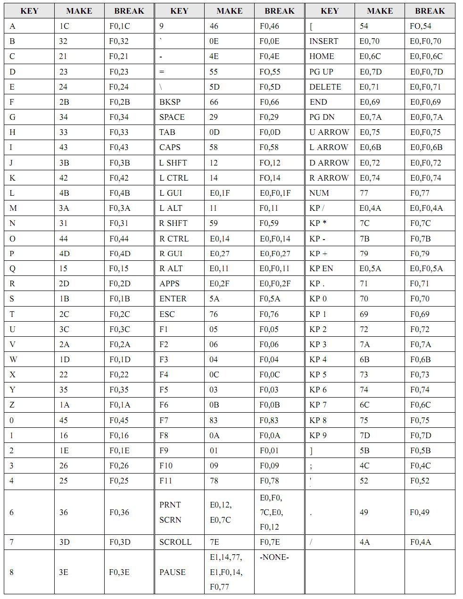
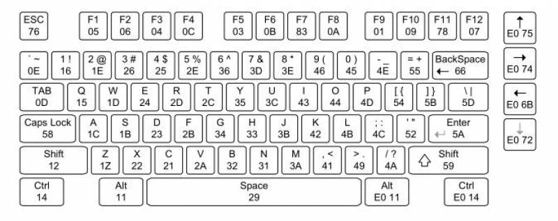
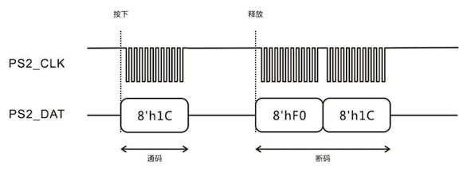
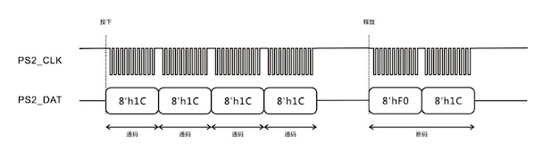
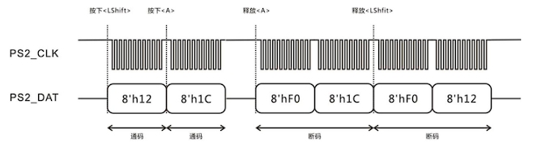

外设使用
本课程大程设计可使用多种外设来完成交互，如用来输入的键盘/鼠标、开关、按钮，用来输出的七段数码管、LED、VGA、蜂鸣器等。其中开关、LED、七段数码管的使用在小实验中已较为熟练，在此不进行详细说明，仅提供部分资源或链接。
LED
Arduino 板上共有 8 个 LED，可直接使用 8 个信号控制亮灭，在 Lab5 中第一次使用。
SWORD 板上有 16 个 LED，接收串行数据，由串行通信信号 LED_sclk, LED_sclrn, LED_sout, LED_EN 控制亮灭，其原理见 LabD，这里提供 LEDP2S 的网表文件与接口文件，其约束请见任何小实验提供的约束中 #16led 注释部分。
七段数码管
Arduino 板上共有 4 个七段数码管，可使用使能信号 AN 进行扫描并用 SEGMENT 传入 8 位信号控制打印内容，在 Lab7 中编写并使用。
SWORD 板上有 8 个七段数码管，接受串行数据，由串行通信信号 seg_sclk, seg_sclrn, seg_sout, seg_EN 控制，其原理见 LabD，在 Lab8 中第一次使用。
蜂鸣器
SWORD 板载 Arduino 板上有蜂鸣器，可用来发出简单的音效，其约束如下：
set_property PACKAGE_PIN AF25 [get_ports buzzer]
set_property IOSTANDARD LVCMOS33 [get_ports buzzer]
蜂鸣器接收一定频率的信号（如方波）并发出对应频率的声音，可以设计一个根据输入音高得到特定频率方波的模块来处理声音，它类似于：
模块内部，你可以根据输入的音高得到对应频率 freq 进而产生这一频率的方波 beep。
VGA
VGA(Video Graphics Array) 协议是一种使用模拟信号的显示标准，我们需要提供的是数字信号（如比较重要的 RGB 三色值、扫描同步信号等），板内 DAC(Digital-to-Analog Converter, DAC/D2C) 会将其转换为 VGA 接口需要的模拟信号。
协议内容
在此讲解一些比较基本的 VGA 协议内容，如果想了解更多请查看本节参考资料或自行搜索。
影响画面质量的因素较主要的有分辨率、刷新率以及色彩。分辨率指屏幕中显示的有效像素点数量，一般以 aaa × bbb 表示，前者指一行中像素点个数，后者指一列中像素点个数。刷新率指屏幕内容刷新速度，一般以 Hz 为单位表示一秒钟刷新多少次。色彩主要指色彩空间格式与“精度”，VGA 要求使用 RGB 色彩空间（即红绿蓝三色混合）且为 12 位，即一个色彩通道用 4 位表示。在我们的实验中，使用 640×480@60Hz 的显示模式，需要接入的时钟频率为 25.175MHz。
我们使用逐行扫描的方式来打印界面，即每次图片刷新都从左上角开始，先从左到右扫描完一行，再转到下一行的最左边开始扫描，直到扫描完最后一行。我们需要处理行时序与场时序，时序图如下（时序图来自知乎文章）：

首先提供数据，对于 640×480@60Hz 的显示模式，上图中行扫描的 a, b, c, d, e 分别为 96, 48, 640, 16, 800，场扫描的 o, p, q, r, s 分别为 2, 33, 480, 10, 525。下面以行时序为例进行解释：行同步阶段(96)将行同步信号置于低位进行同步；显示后沿(48)将行同步信号重新拉起到高位但并不显示图像（将 RGB 三色通道均置为 0 即可）；有效数据(640)为每行 640 个像素点，此时将像素点对应的色彩 RGB 值放置在相应通道上进行色彩输出；显示前沿(16)不显示图像；之后将进入下一个周期的行扫描（从行同步开始）此时已经开始对下一行进行扫描，一次扫描经过的像素点数量(800)，但实际打印的有效数据数量(640)。场同步扫描与行同步扫描相似，不再赘述。
对于我们而言，只需要知道同步信号拉低与拉高的时机以及打印有效数据的时机即可（行坐标在 [a+b, a+b+c) 且列坐标在 [o+p, o+p+q) 时打印有效的数据）。
使用
这里提供一个可用的 VGA 驱动模块代码，它来自老师提供的优秀工程。
其模块接口如下：
module vgac(
input vga_clk,
input clrn,
input [11:0] d_in,
output reg [8:0] row_addr,
output reg [9:0] col_addr,
output reg rdn,
output reg [3:0] r,g,b,
output reg hs, vs
);
输入信号：
vga_clk：由原理可知，迎接入 25MHz 时钟，如果接入后无法正常显示，可以尝试用 MMCM 获得 25.175MHz 的时钟接入clrn：重置信号，低电平有效，有效时将扫描信号归位到 (0, 0)d_in：12 位 RGB 信号，格式为bbbb_gggg_rrrr，每个色彩通道使用 4 位。需要注意，这里的 RGB 值是根据上个时钟周期的row_addr, col_addr确定的
输出信号：
row_addr, col_addr：扫描地址r, g, b：三个色彩通道值，直接连接到顶层模块输出即可rdn：判断当前扫描到的地址是否为有效数据，低电平为有效hs, vs：行同步信号与场同步信号，详见原理
PS/2
PS/2 接口(Personal System/2)是一种 PC 电脑上的接口，可用来连接键盘和鼠标。接口共有 6 个接脚，除接地与 Vcc 外，有时钟和一位数据（另外两脚为保留未使用）。
Sword 板内有 USB-PS2 转换，因此我们可以将 USB 键盘或鼠标插入板上 USB 口来使用，PS/2 相关信号约束如下：
set_property PACKAGE_PIN N18 [get_ports PS2_clk]
set_property IOSTANDARD LVCMOS33 [get_ports PS2_clk]
set_property PACKAGE_PIN M19 [get_ports PS2_data]
set_property IOSTANDARD LVCMOS33 [get_ports PS2_data]
协议内容
PS/2 协议中，一次传输有效数据为一字节，每次传输（一帧）为 11 位，分别为开始位（1 位，一直为 0）、有效数据（8 位）、校验位（1 位）、结束位（1 位，一直为 1），在我们简单的设计里，每一帧数据中只需要关注中间的 8 位有效数据即可。

PS/2 将键盘编码分为通码(Make)与断码(Break)，通码代表“按下”，断码代表“松开”。键盘上大部分按键的通码只有一字节（比如 WASD 等字母按键），但也有特殊按键的通码为两字节（比如上下左右，其格式为 E0 开头的两字节数据）。断码是在通码的基础上添加一字节的 F0 数据，比如 W 的通码为 1D 断码为 F0 1D，上 ↑ 的通码为 E0 75 断码为 E0 F0 75。由此我们可知，通码可能需要 1~2 帧，断码可能需要 2~3 帧（如果传输内容超过 1 帧，键盘可以保证传输内容是连续的，不会被其他信号隔开）。
按键-通码/断码对照表
较为常用的对照表（还有其他标准）：

可以用键盘位置对应的表：

观察几个按键行为加深理解（图片来自参考内容中的 知乎文章）。
按一下 A 后释放：

长按 A 后释放：

组合键 Shift+A：

PS/2 键盘可以实现全键无冲突，因为按键按下后如果不松开，则至少不会发送断码，我们可以认为在得到一个按键断码之前，这个按键一直是被按下的状态。
实现上的建议
根据你的需要实现模块，如果你的需要仅是使用特定的几个按键比如 ↑↓←→ 以及回车键，那么你的 PS2 模块可以类似于：
如果你需要键入内容（需要注意通码和 ASCII 的值并不对应），那么可能类似于：
module PS2(
input clk, rst,
input ps2_clk, ps2_data,
output reg key_state, // Make or Break
output reg [7:0] key_ascii // Code -> ASCII
);
ps2_clk 的频率较低，数量级在 kHz 水平，而我们 FPGA 的时钟是较快的，在实现时可以对时钟进行打拍记录来确定“下降沿”的位置（参考代码来自 Pan-Ziyue/FPGA-JOJO）：
reg ps2_clk_falg0, ps2_clk_falg1, ps2_clk_falg2;
always@(posedge clk or posedge rst)begin
if(rst)begin
ps2_clk_falg0<=1'b0;
ps2_clk_falg1<=1'b0;
ps2_clk_falg2<=1'b0;
end
else begin
ps2_clk_falg0<=ps2_clk;
ps2_clk_falg1<=ps2_clk_falg0;
ps2_clk_falg2<=ps2_clk_falg1;
end
end
wire negedge_ps2_clk = !ps2_clk_falg1 & ps2_clk_falg2;
reg negedge_ps2_clk_shift;
always@(posedge clk)begin
negedge_ps2_clk_shift<=negedge_ps2_clk;
end
在下降沿时捕捉有效信息（从一帧的第 2 位开始连续 8 位为有效数据）：
always@(posedge clk or posedge rst)begin
if(rst)
temp_data<=8'd0;
else if (negedge_ps2_clk_shift)begin
case(num)
4'd2 : temp_data[0]<=ps2_data;
4'd3 : temp_data[1]<=ps2_data;
4'd4 : temp_data[2]<=ps2_data;
4'd5 : temp_data[3]<=ps2_data;
4'd6 : temp_data[4]<=ps2_data;
4'd7 : temp_data[5]<=ps2_data;
4'd8 : temp_data[6]<=ps2_data;
4'd9 : temp_data[7]<=ps2_data;
default: temp_data<=temp_data;
endcase
end
else temp_data<=temp_data;
end
这里的 temp_data 除了可能是代表按键位置的数据，也可能是特殊按键的标记 E0，还可能是断码的标记 F0，你需要对此加以判断，并设置断码/特殊按键的提示，因为在 F0/E0 之后还需要接收数据才能组成完整的按键。具体实现可以参考上述潘学长提供的代码。